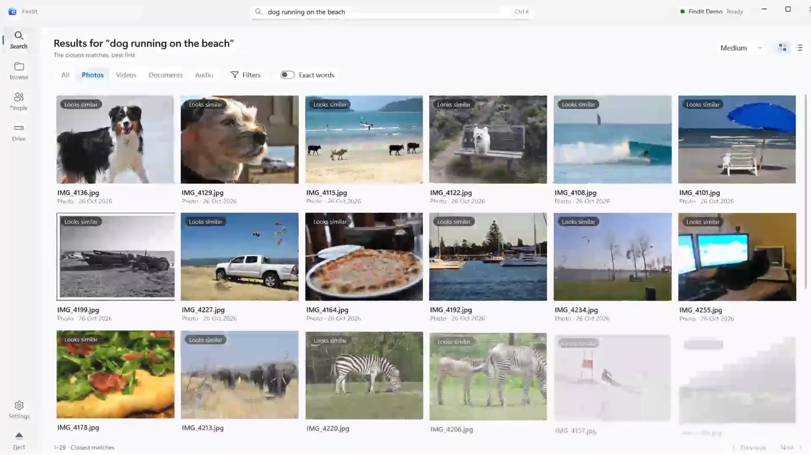

IMG_4136.jpg
Looks similar
Why it matchedNothing on this file says “dog”. It was found by what is in the picture.
Offline search for Windows · Free and open source
FindIt puts a private search engine on your external drive, right next to your files. Plug it into any Windows PC and find a photo by what's in it, a video at the right moment, or an invoice by the words inside.
No install. No internet. No account.
Development preview 0.1.0-preview.9 · Windows 10 and 11, x64
Looks similar
Why it matchedNothing on this file says “dog”. It was found by what is in the picture.
Scene · Sound · Speech
Why it matched“…a whole herd of elephants crossed the track right in front of us.” It opens at the moment that matches.
Sound · Speech
Why it matched“Shopping list for pizza night on Friday: fresh basil, mozzarella…” Found in what was said.
Exact words
Why it matchedINVOICE AB-0091 · Payment reference: AB-0091. Two places on the page, highlighted.

01 Why it exists
Everything worth keeping ends up on an external drive eventually: the phone backups, the holiday footage, the scanned lease, the voice memo you meant to listen to again. The files survive. What's in them doesn't, at least not in any form a computer can look up.
A filename can't tell you which clip has the elephants, or which PDF holds the invoice number your accountant is asking about. Cloud photo services fixed this by asking you to upload everything. FindIt keeps the understanding on the drive instead, next to the files, so it goes wherever the drive goes.
IMG_4136.jpga collie on the sand, mid-barkSafari day 3.mp4elephants crossing the track, first twelve secondsScan0003.pdfthe lease, signed, page fourNew Recording 14.m4aa shopping list read aloud on the way homeDSC00412.JPGkites over the park, a white pickup belowfinal_FINAL_v2.xlsxthe travel budget for LisbonVID_20190714_183302.mp4the toast, about three minutes inDocument (3).docxgrandma's recipe, typed up from the card02 How you search
One search box reads every kind of file. Describe a moment, name a person, or type the words you recall. Meaning and exact keywords are searched together, and the closest matches come first.
Describe the picture. No tags, captions or albums needed; a local model understands the image itself.
“kites flying over a park”
Scenes are sampled around every cut and speech is transcribed. Results open at the matching moment, with matches marked on the timeline.
“elephants crossing the road”
Voice memos and recordings are searchable by their words and by how they sound.
“someone speaking about invoices”
PDF, including scanned pages read with OCR, plus Word, Excel, RTF, HTML and plain text. Matching words are highlighted on the page.
“AB-0091”
Faces are grouped on the PC. Name a group or add a reference photo, review the suggestions, then search for one person or several together.
“Grandma with the birthday cake”
Narrow any search by file type, folder, date and person, or switch to exact words only.
Videos · 2019 · Holidays
03 Where it lives
The program, its AI models, the index, previews, transcripts and people data all sit in one folder beside your files. Your folders stay exactly where they are, and FindIt only ever reads them.
That is what makes it portable. There is nothing to install on the next PC, nothing to sign in to, and nothing to download first.
Photos\yours, only ever readVideos\yours, only ever readDocuments\yours, only ever readFindIt.exeopen this on any PCFindIt\
app\the program, with its own .NET runtime and codecsmodels\EmbeddingGemma, Whisper, Tesseract, face modelsarchive\the index, previews, transcripts and peopleOn a reasonably fast Windows PC, choose the folders to make searchable. A large library can take hours. Pause whenever you like; what's done is searchable along the way.
Unplug the drive. The index goes with the files, and the next preparation only reads what changed.
Plug it into any Windows 10 or 11 PC and open FindIt.exe. Searching works on modest hardware.
On the host PC, FindIt leaves only disposable caches in %LOCALAPPDATA%\FindIt: a copy of the program so the drive can be ejected cleanly, a note of which models were already verified, and tiny process records with no filenames or content. Delete them whenever FindIt is closed.
04 Promises
Each of these is a design rule, with the evidence one click away.
Originals are never modified, moved or renamed. On a physical test drive, updating FindIt in place left every existing file identical by SHA-256, length and modification time.
Drive validationNo telemetry, no accounts and no background network access. Every model runs on the PC in front of you. Update checks happen only when you ask.
ArchitecturePreparation writes immutable, checksummed generations and switches over only when one is complete. Twenty-five recovery scenarios, from killed processes to a full disk, all keep the previous index intact.
Recovery validationPeople and action results are labelled as possible matches, drawn from sampled frames. You confirm who is who before FindIt treats a name as fact.
People evidence05 Status
FindIt works end to end and is covered by over 200 automated tests and physical-drive checks. It has not passed its public-release gates yet. Here is exactly where it stands.
Read the full validation status, including methods and known limits.
06 Inside
Heavy work runs in separate worker processes, so a decoder that crashes on a strange file can't take the app down with it. The index is a set of immutable, checksummed files that a reader can map straight from the drive.
FindIt.exe native launcher
└─ FindIt the window you use
├─ reader search, previews, people
├─ preparer extraction, embeddings, faces
└─ preview isolated playback07 Get it
FindIt-0.1.0-preview.9-win-x64.zip
Download the ZIPSHA-256 checksum Release notes All releases
Packages aren't code-signed yet, so Windows SmartScreen may ask you to confirm the first launch.
Compare the hash with the published checksum file.
Get-FileHash .\FindIt-0.1.0-preview.9-win-x64.zip
The drive should end up with FindIt.exe and a FindIt folder side by side. Leave your own folders where they are. Allow about 2 GB plus room for the index; NTFS, exFAT and FAT32 all work.
Open FindIt.exe, go to Drive, choose folders and OCR languages, and start. You can pause and resume.
Use Eject before unplugging. On the next PC, open the same FindIt.exe.
Prefer to build it yourself? The build needs only the .NET SDK and PowerShell, and downloads its own pinned, checksummed toolchain and models.